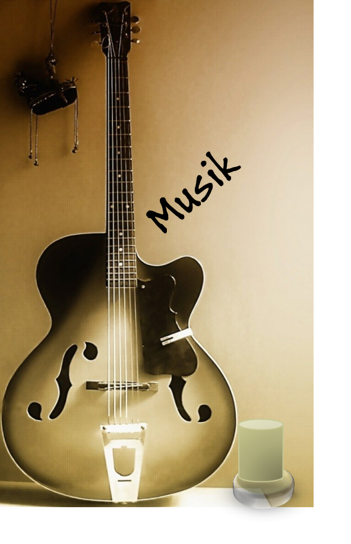

En su escencia se ha definido desde sus inicios por su rechazo al mercantilismo de la cultura establecida. No es un estilo musical como tal, si no una denominación muy amplia que abarca desde las guitarras distorsionadas y las letras depresivas del grunge, hasta la inocencia desaliñada del twee pop, pasando por el pop revivalista del britpop, las melodías etéreas del dream pop o la experimentación del post rock.
Bandas de Rock Alternativo hay muchas, entre las cuales podemos destacar grandes
agrupaciones como lo son:
(Linkin Par, Nirvana, Muse, Radiohead, Paramore, Gorillaz, Oasis, My Chemical Romance,
Foo Fighters, Depeche Mode), entre muchas otras agrupaciones.